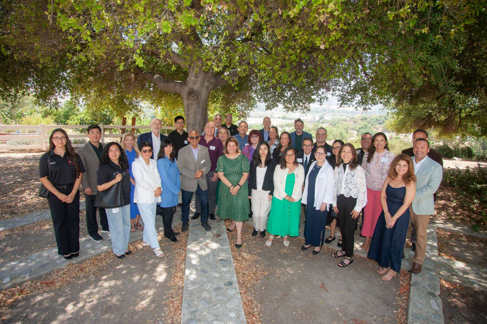
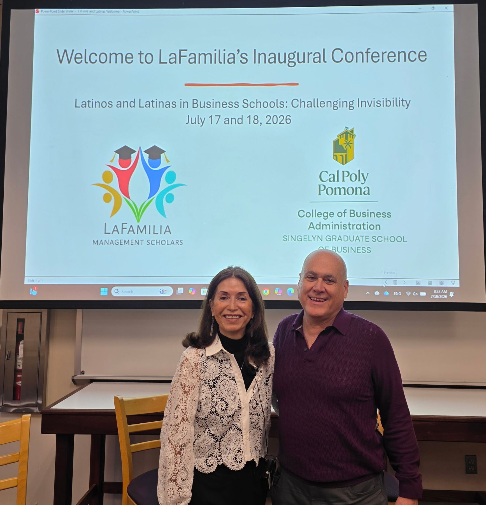
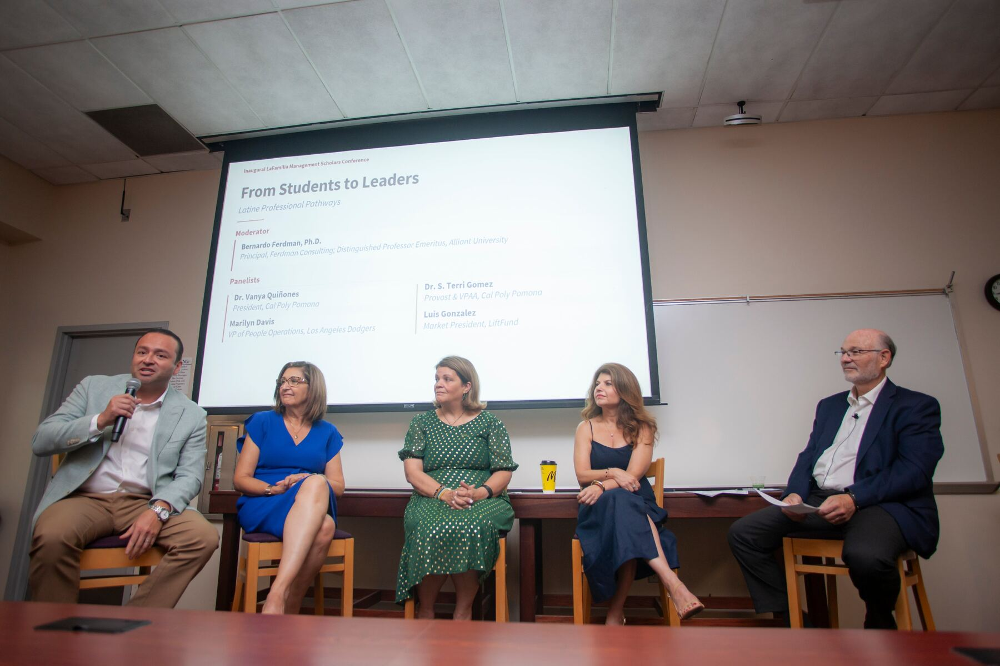
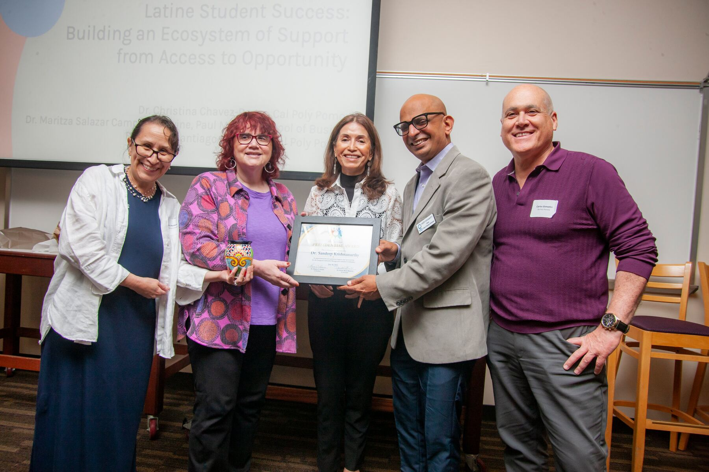
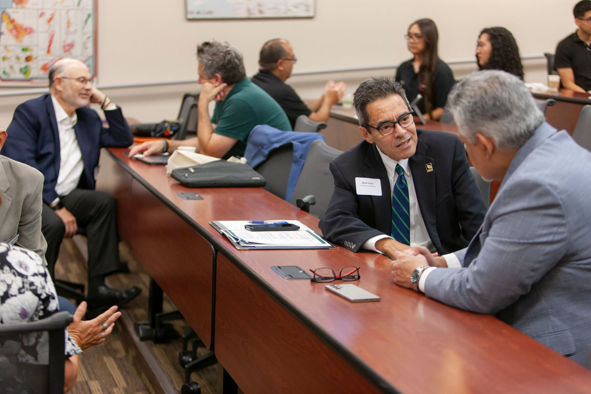
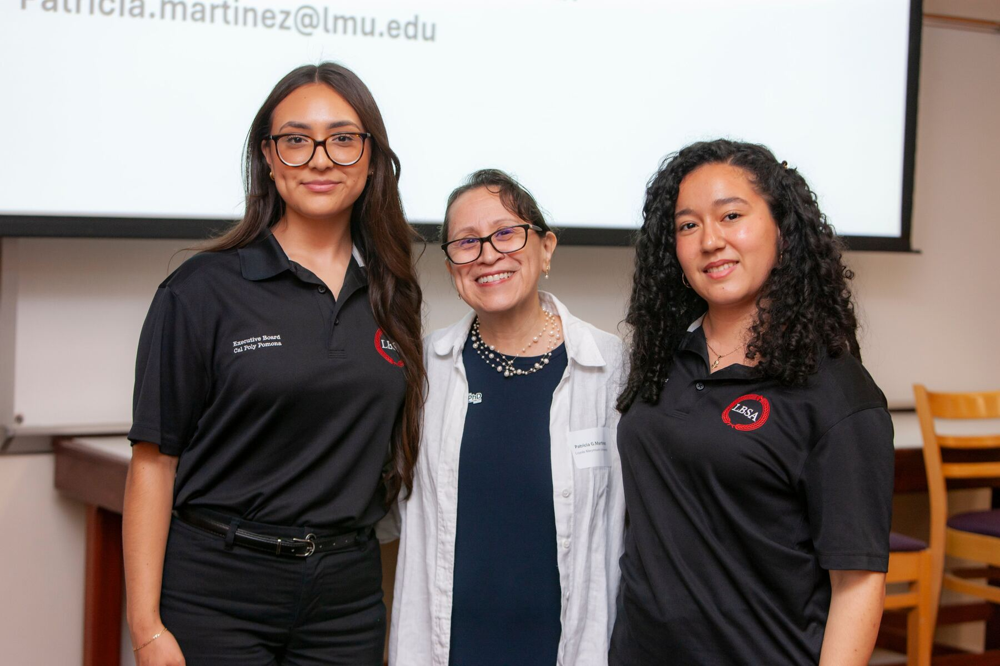

Management Scholars
Building community, advancing visibility, and shaping the future of Latinx scholars in business schools since 2019.

La Familia of Management Scholars will be a vibrant community of academics nationally recognized for providing mentorship and professional development opportunities for faculty, post-doctorates, doctoral students, and scholars. LaFamilia is open to all scholars regardless of identity who have interest in Latinx research. We aim to lead and inspire undergraduate and graduate students to thrive and become role models by pursuing academic careers.
LaFamilia is open to all scholars regardless of identity who have interest in Latinx research.
La Familia of Management Scholars connects faculty, post doctorate, and doctoral students navigating a U.S. context, to collaborate on Latinx research, teaching and success of all students by nurturing and providing support through culturally relevant mentorship programs and professional development opportunities.
Nuestros Pilares del Éxito
Bring commitment to Hispanic Excellence into the classroom by serving as role models, sharing our stories, inspiring students, and providing career advice and coaching.
From the Committee for Hispanic Excellence to a thriving national community of scholars.
In recognition of the Anniversary of the White House Initiative on Educational Excellence for Hispanics, The PhD Project launched the Committee for Hispanic Excellence (CHE).
La Familia Management Scholars was formally established as a community dedicated to Latinx scholars in management.
Equality, Diversity and Inclusion: An International Journal — Special Issue: We Are Here (Estamos Aquí): Researching the Latinx Work Experience in the United States (published June 2025).
View Special IssueLatinos and Latinas in Business Schools: Challenging Invisibility
July 17–18, 2026 • California State Polytechnic University, Pomona
Highlights from the Inaugural Conference and beyond

Leaders kick off the inaugural gathering at Cal Poly Pomona College of Business.

Latine professional pathways moderated by Dr. Bernardo Ferdman.

Honoring leadership and commitment to Latine student success.

Honest exchange on building inclusive business schools.

Faculty and student leaders of the Latino Business Student Association.
Whether you are a faculty member, doctoral student, postdoc, or ally, there is a place for you here.
Explore the ConferenceNote on Language: We acknowledge the evolution of language and terms used to refer to Hispanic, Latino, Latina, Latine, and Iberoamerican peoples. We currently use “Latinx” and “Latine” to include as many familiares as possible.
Together we build visibility, community, and pathways for the next generation of Latinx scholars in business education.